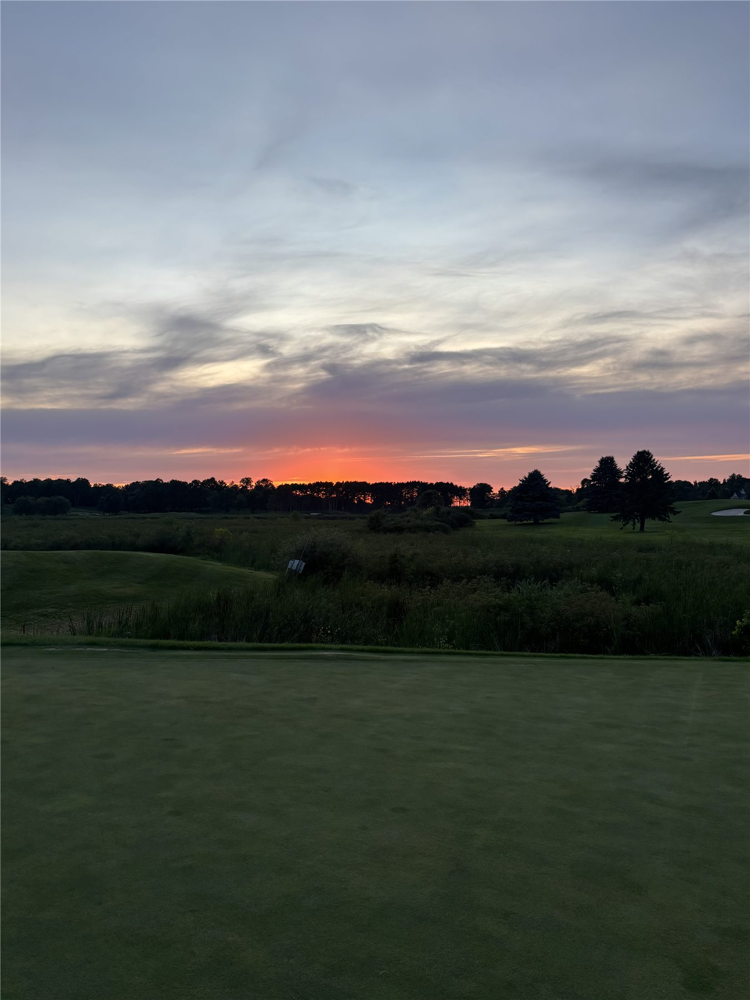
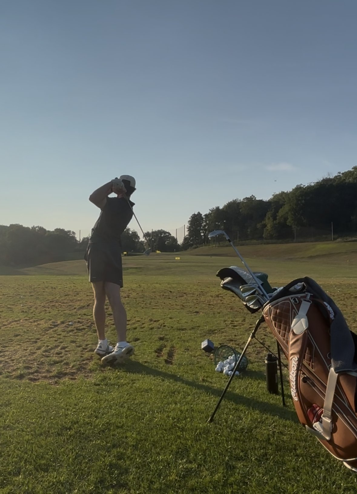
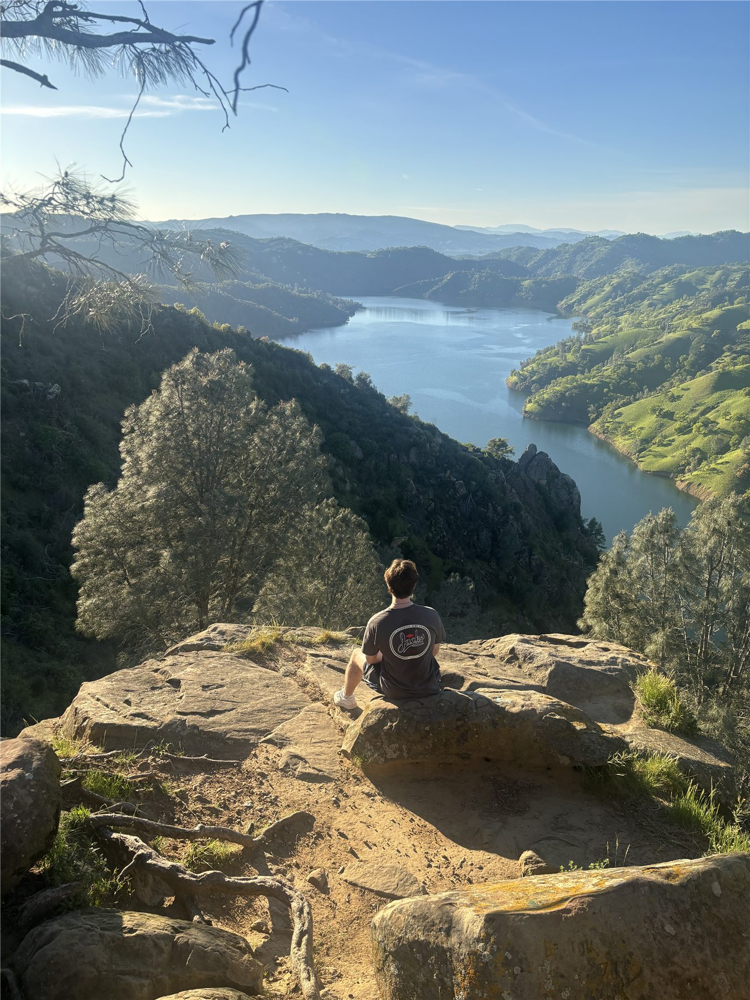
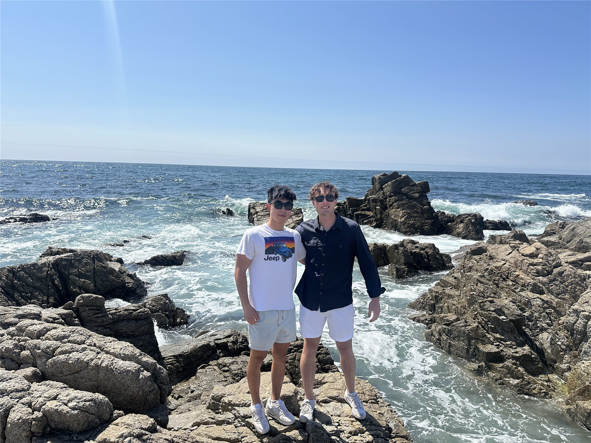
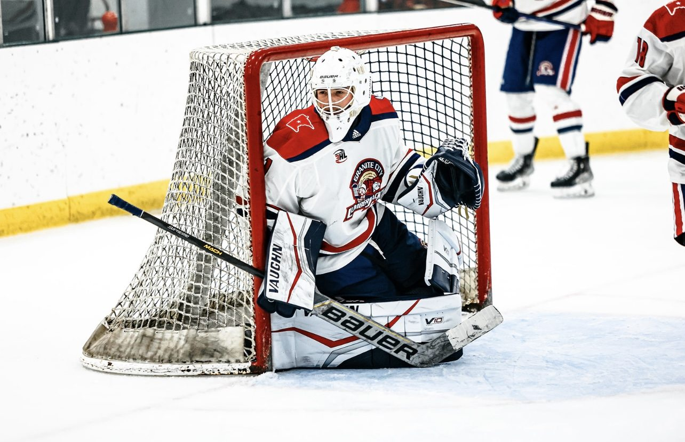
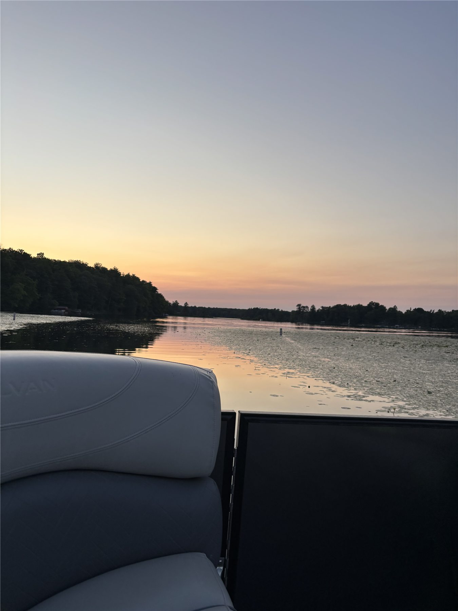

Golf
I really love golf, and a big part of that is that it's a mental challenge every time you play. I've played for a long time now. My home course is Deer Run in Victoria, MN, and my goal is to get to scratch.


Beyond work
What I do when I'm not working: golf, piano, travel, and hockey, plus a few other things I can't stay away from.
I really love golf, and a big part of that is that it's a mental challenge every time you play. I've played for a long time now. My home course is Deer Run in Victoria, MN, and my goal is to get to scratch.


I started playing as a kid, but I didn't pick it up seriously until COVID, when I began teaching myself. My favorite piece is Rachmaninoff's Piano Sonata No. 2, second movement.
My favorite trip so far was to San Francisco to visit one of my best friends. I got to scale mountains and see the beautiful landscape of California.


I love hockey. I played goalie for most of my career, and I'm a big Kings fan.

